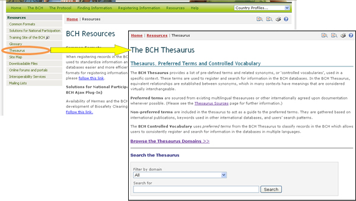
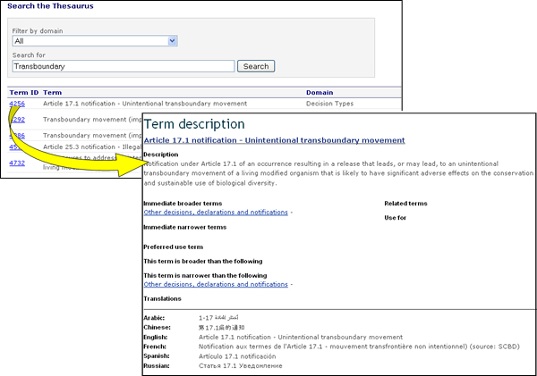

The Thesaurus provides a list of pre-defined terms and related synonyms, or ‘controlled vocabularies’, used in a specific context. These terms are used to register and search for information in the BCH databases.
-
A broader term indicates the more general class to which a term belongs in the controlled vocabulary; everything that is true of a term is also true of its broader term (e.g. Gossypium is broader than Gossypium hirsutum).
-
A narrower term indicates a more specific term or member of a class in the controlled vocabulary (e.g. Gossypium hirsutum is narrower than Gossypium).
-
A non-preferred term is a synonym to a preferred use term in the controlled vocabulary that has an equivalent meaning to the preferred use term, but is not used for indexing records (e.g. “bananas” is a non-preferred term for "banana”).
-
A preferred use term in the controlled vocabulary is the term selected from among synonyms to be used for indexing and retrieval purposes. This term may also be used instead of non-preferred term. This term is translated into the six UN languages to enable multi-lingual functionality of the BCH.
-
A related term brings to the user's attention terms in the controlled vocabulary that are associated because of overlapping meanings or other relationships (e.g. taxonomic and common names for organisms).
Following the Thesaurus link in the Resources page or in the resources left-hand menu displays the BCH Thesaurus page, which provides features for searching for terms and for browsing all terms in the thesaurus.

Terms in the BCH Thesaurus are organized into term domains, each of them containing a list of terms. The Search the Thesaurus section provides a drop down menu for selecting in which domain to search for terms. A box for searching for specific terms is also provided. To search for terms, enter the domain and/or keyword(s) of interest and click on the Search button.
In the results list, clicking on the Term ID of a term will display more information about its use in the BCH Central Portal. This takes the user to the Term description page, which provides details on the meaning of the term and how it is used in the BCH Central Portal, including broader, narrower and preferred uses of the term and translations into the six official UN languages. The preferred use term in the controlled vocabulary is a term selected from among synonyms to be used for indexing and retrieval purposes. For example, maize is the preferred use term over corn in the BCH.

Example: If a user wishes to understand the use of the term “transboundary” in activities related to the Protocol, the user enters the search terms “All” in the Filter by domain box and “transboundary” in the Search for box on the Search Thesaurus page. Selecting the Search button will provide a list of records describing how the term “transboundary” is used in various domains within the BCH Central Portal. The search results (in March 2010) identified five uses of the term in four domains within the BCH.

The thesaurus sources link provides further information regarding the sources on which terms in the thesaurus and their translations are based.